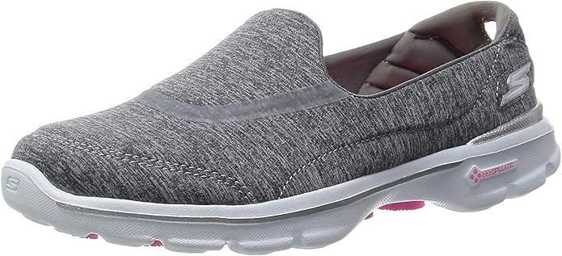
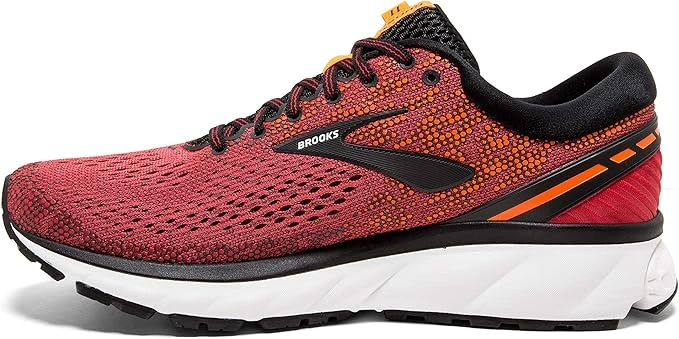
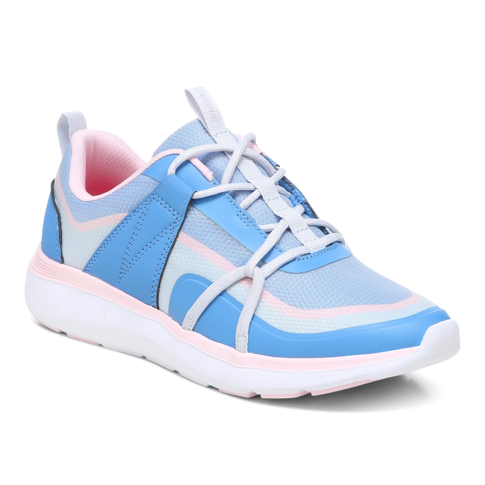
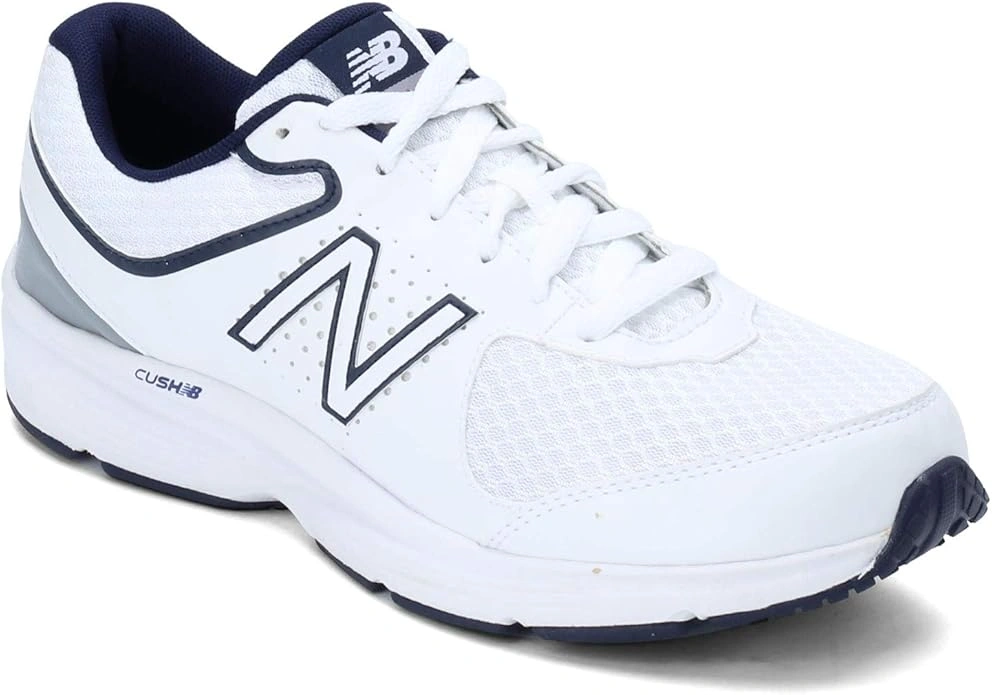
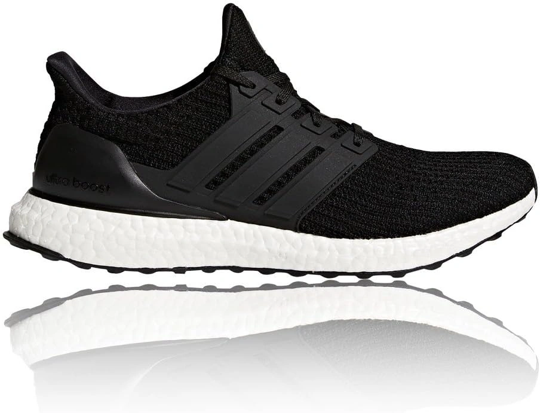
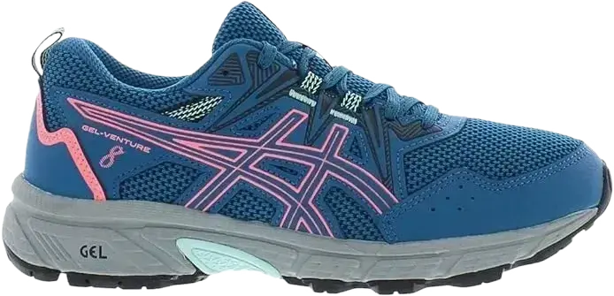
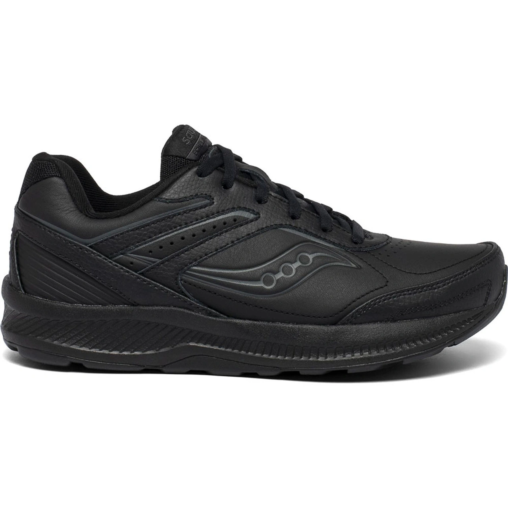
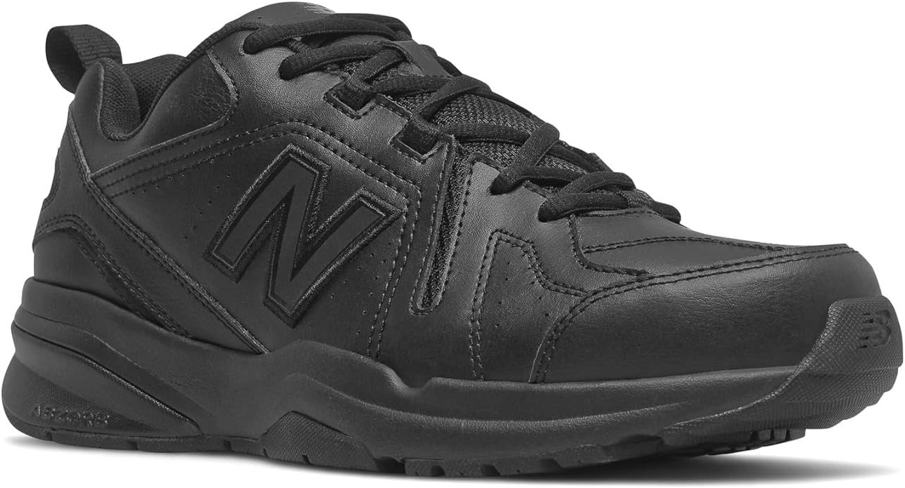
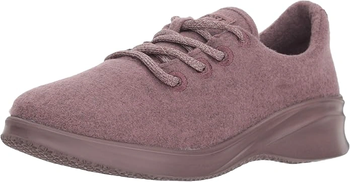
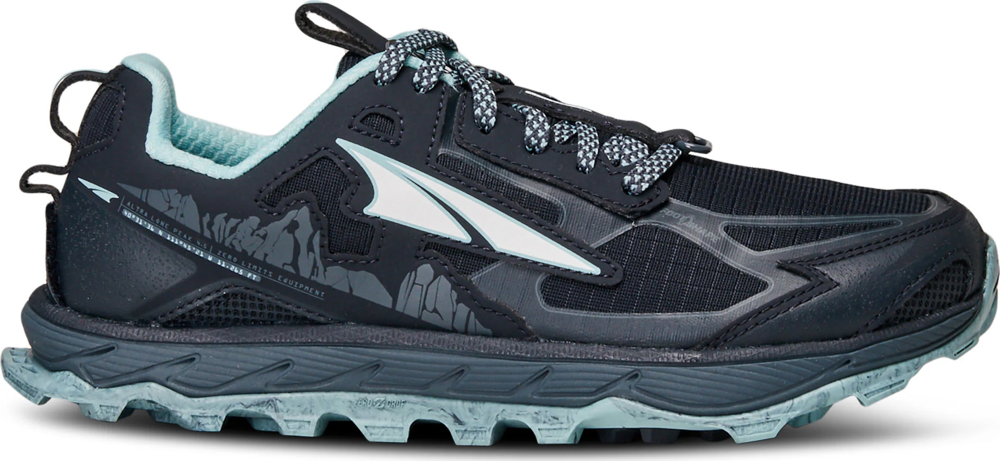

10 Best Shoes for Speed Walking of 2024
Best Shoes for Speed Walking If you have nice shoes, brisk walking with a smooth pace isn’t a big deal. Besides, we often come across a situation where we have to rush, maybe due to running out of time or because we want to be there first! For that, the need for the best shoes for speed walking is crucial.
Comfort shoes that are specially designed to enhance the walking Heavy Person experience often have comforting features such as the EVA midsoles, Gel cushioning, enough padding, resilience, and more.
However, to choose a single pair out of so many options seems like an arduous task. Therefore, we have sorted out the best footwear to save your time and gathered all in one list.
-
#1
Skechers Performance Women’s Go Walk 3
For speed walking with comfort gait, you can give this Skechers women’s slip-on walking shoe a try. Its resilient sole with durable rubber features the quality that will make you amazed. Walking on different terrains, pathways, and bumpy roads have become easier with this footwear.
The imported quality with 100% mesh fabric/synthetic material keeps the comfortable feel around you.
The moment you wear this shoe it brings a soothing feel with soft cushioning. Besides, the Goga Mat technology has been engineered in the insoles with high-rebound padding. This technology works very well to let you have an athletic walk. -
#2
BROOKS Ghost 11
Concessions on the quality of your footwear result in hurtful feet and sometimes serious foot pain due to the prolonged wearing. Besides, if you are looking for the best shoe for speed walking what can be better than this Brooks Ghost 11.
ts quality sole caters to the traction on challenging roads and grounds. This promotes stability and resistance towards slipping. Moreover, a comfortable and snug fit with the ability to absorb the shocks is excellent for brisk walking.
In the midsole of the sole, this shoe features the Segmented Crash padding that will effectively keep your feet relaxed. Its Omega Flex Grooves gives the foot sole better flexibility while running and mover with great force. -
#3
Vionic Satima Active
If you prefer to walk on foot, a good choice of shoes will be pretty much aiding for you. Besides, the sole of a carefully selected footwear will keep you relaxed for longer times. For that, we bring you this Vionic Satima for your walking time. Its comfortable interior and stylish exterior are about your happiness.
This lace-up shoe with extra resilience in the sole allows you to walk with more ease and more comfort shoe. Have a pride walk without hurting your vulnerable joints. Its mesh design let the fresh air in. Besides, the PU overlays and rounded reinforced toe box let the feet to be in an active and comfy stare. No issue of sweat and moisture due to the highly breathable fabric.
Moreover, the lace-up closure followed by the well-padded collar and tongue has been kept pretty much soft. The wide enough toes area allows your feet to fit snugly with added solace. Its EVA sole footed and lightweight outer sole increases the walking speed to a greater extent. -
#4
New Balance 411
From the very first look, its all-white outlook cast a wonderful impression. For a shoe that is for speed walks it’s simple yet delicate look is what you will love the most. It features the imported rubber sole with the highest flexibility in every step. Moreover, the 100% fabric design is a good way to keep feet in good health.
The comforting feel with its lightweight design becomes your ultimate friend. This shoe woe works well on all grounds be it a rough bumpy road or a smooth walking floor. Its DynaSoft midsole cushioning enhances the responsiveness in the ride and keeps it springy every time you put it on.
The EVA foam technology in the midsole helps a lot to cater to the best comfort on your feet. it helps you have a speedy gait with balance. If you are looking for the mesh feature in a shoe, it offers you the finest premium quality breathable mesh on feet. The uppers have been used with a mesh net. Its seam-free design and attractive color combinations never let you be out of style. The outsole is also great for traction and it is quite resistant against slips and falls off incidents. -
#5
Adidas UltraBoost
This is an imported synthetic sneaker with special flexibility to the sole. Its lace-up closure provides the wearer with utmost fitting and gives snugly feel. The Parkour comfortable shoe and adaptable inner liners and padding will keep vulnerable feet relaxed all the time. Its stretchy uppers and stylish design have always been a source of pleasure and comfort.
Due to the soft and bouncy wearing experience, you walk considerably faster and hence you get the swiftest walk every time. The Primeknit textile uppers and Stretched outsole allow you to have more stable and gripping footsteps. The rubber used at the exterior sole is highly capable of working well on the wet and dry floors with controlled traction.
Besides, its lightweight features never put strain or pressure on the joint. Its boost midsole is there to maintain the Torsion system. This technology is especially there to allow your forefoot and rearfoot to move separately. This ultimately results in having improved surface stability and controlled steps. -
#6
ASICS Women’s Gel-Venture 6
ASICS Women’s Gel-Venture 6 Running is the kind of shoe that will promote speed while walking and make you comfortable through your journey. Its arch support and comfort liners will only become the source of your happiness.
The fabric and synthetic construction has been kept user-friendly and thought well-padded within. The GEL technology rarefies the shocks and jerks while running violently and gives you smoother traction. So, no matter how fast you walk or run the Gel cushioning will take care of the sudden jerks and jumping effect very wisely.
The removable sock liners mean you can use the Ortholite sole if you want to. This shoe has been designed with enough padding and cushions that will make your feet pretty much relaxed. Now talking about the outsole, it features the trail-specific outsole that caters the uphill and downhill. Also, the durability is there to work well in a challenging situation and rough use. -
#7
Saucony Women’s Grid Omni Walker
Speed walking is actually good in many ways. But in order to get the most out of it you need to have the best shoes for speed walking. Besides, if you are thinking of replacing your old footwear with some new and recent one, try out this Saucony model Grid Omni for women.
First of all, its fine quality leather design with the synthetic combination is good for various reasons. Besides, it enhances the durability to a greater extent. So, you can wear this shoe for a speed walking session with no fear of tears. For an all-day comforting feel, this leather made design is a good option to consider.
Furthermore, the thick rubber made outsole features the ultra- bounce that keeps the running more exciting and comfortable. The shaft of this shoe measures low-top from the arch. The lacing design and mesh uppers are a good blend to allow ventilation and perfection in the fitting. Its flat lacing followed by padded tongue and collar looks decent in all ways. -
#8
New Balance Men’s 608 V5
We all know that walking shoes demand to be comfortable. But when it comes to relative speed walking the comfort level cannot be the regular one. Therefore, you need something suave and ace such as this New Balance Men608 V5 walking sneaker. Its perfect balanced cushioning and each sock liner have been treated with much care and concert to the toes and joints of your feet. The supportive footsteps offered by this shoe are of no match with any other.
Take for example its appearance. While the blend of soft and fine mesh with leather creates a stylish and comforting aura. The mesh regulates the ventilation while the leather keeps it durable and stylish.
Moreover, the thoroughly padded mesh tongue also features the mesh on it. Hence, the sweat and moist of your skin readily absorbs within it. The lace-up designs with hidden eyelets allow perfect fitting with the adjustment of your preference. Its pull-tab heel system allows you to take it off and on whenever you feel like. -
#9
Allbirds Wool Runner Mizzles
Wearing the right shoe with exact size brings speed in walking but also it is great to keep up good foot health. However, if you are searching high and low for a shoe that enhances your brisk walking session not to go elsewhere as we have bought you this Allbirds Wool runner Mizzles sneakers.
Before making a final decision let’s check out its features. This shoe has been designed with plenty of comforting points all over the shoe. Its EVA treated midsole with carbon negative feels comfortable and produces a user-friendly vibe. The interior is water-repellent and hence if you get sweaty the liners will readily absorb the moist and sweat right away. The moment you wear this shoe you say good-bye to itch and discomfort.
Its breathable bio-treated shield with wool uppers is certified by ECO PASSPORT Certified (by OEKO-TEX®). The durable outer sole is quite thick to withstand the shock impact and sudden unwanted foot movement that can cause the effect on your joints. -
#10
Altra Lone Peak 4.5
Certainly, due to its aggressive approach to all kinds of terrains and rough grounds Altra Lone shoe is the favorite one for many of the day walkers. Moreover, the comfortable and modern look can be worn on various occasions with pride of swift pace. The moderate cushioning and high-level of traction on the outsole allow you to have that energetic walk with no fear of tripping and slipping. The rubber sole features slip-resistivity that doesn’t let you fall.
It’s balanced cushioning lets your feet have an unwinding effect. Moreover, Fit4Her™ technology provides the best support to the narrow feet types. Furthermore, this shoe features a thick enough outsole with about 25 mm of the thickness measured. The dual layers EVA midsole
Besides, its toe box area supplies the relaxing position to the feet; you can spread the toes as far as you feel comfortable, regardless of the room. The abrasion-resistant, mesh uppers, and static webbing feature the flexible strap overlays. With all of the features, this shoe isn’t a heavyweight at all. The 9.2 oz. of weight can be handled well while you plan to walk in speed.